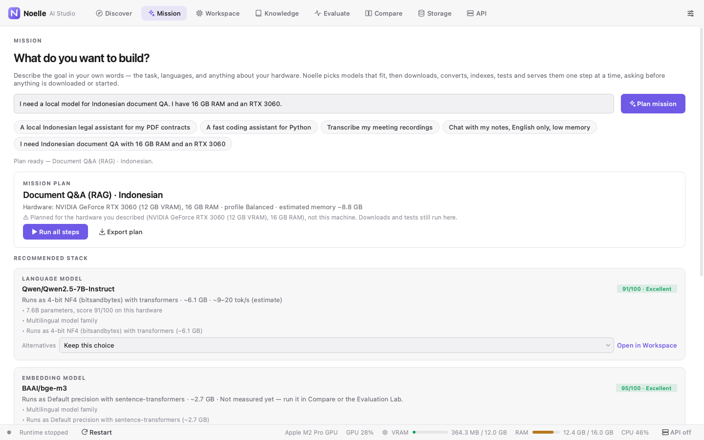
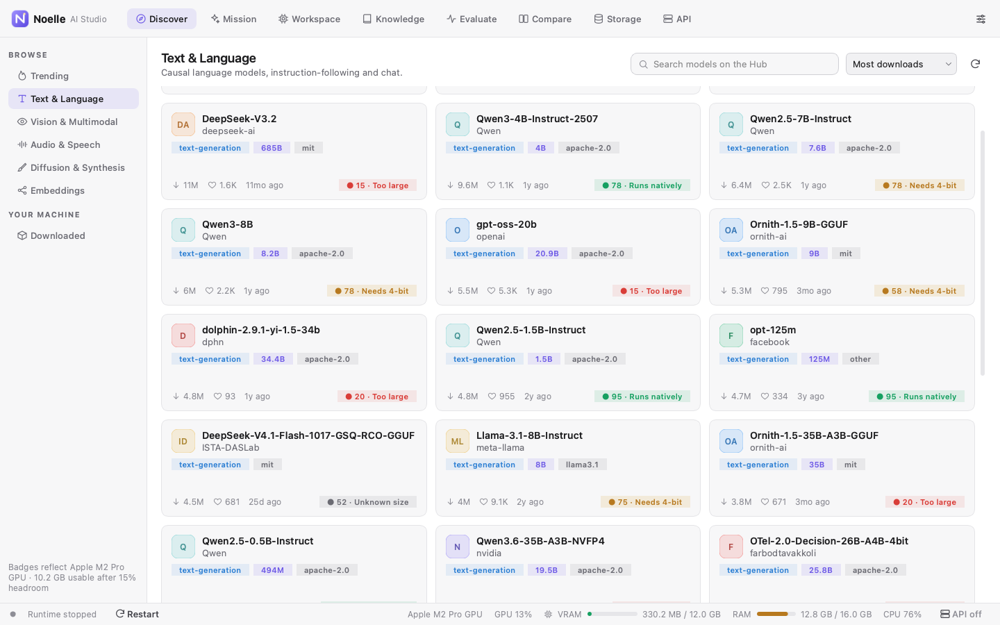
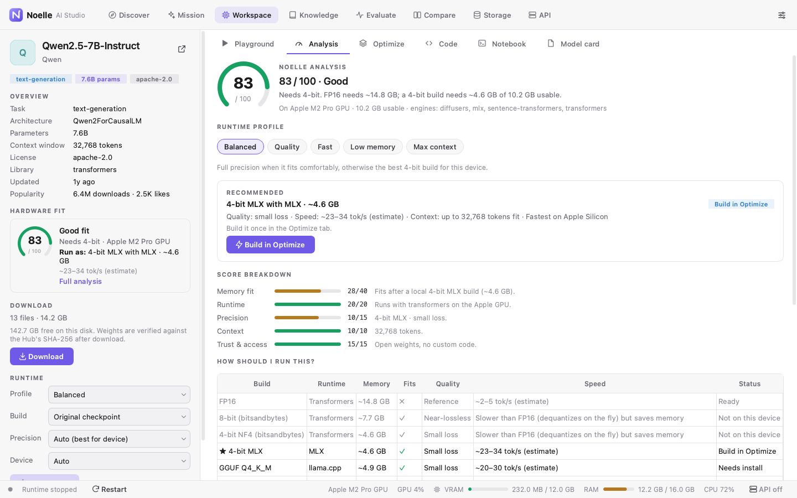
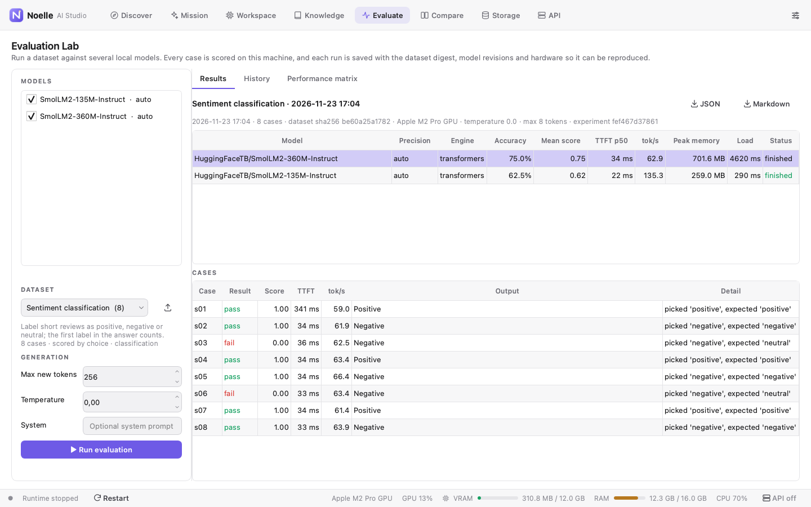

Mission mode
Describe your goal — “an Indonesian legal assistant for my PDFs”. Noelle proposes a stack that fits your hardware and sets it up step by step, asking before every download.
Free & open source · macOS · Windows · Linux
Tell Noelle what you want to build. It finds open models on Hugging Face that fit your computer, sets them up, tests them on your own tasks and serves them to your apps — all on your machine.
No account. No cloud. Your prompts and documents never leave your computer.

Everything in one app
Noelle covers the whole life of a local model: discover, check, install, run, compare, evaluate, optimise and serve.
Describe your goal — “an Indonesian legal assistant for my PDFs”. Noelle proposes a stack that fits your hardware and sets it up step by step, asking before every download.
Every model gets a 0–100 score for your machine, with the reasons: memory, runtime, precision, context length and trust.
FP16, 8-bit, 4-bit MLX, NF4, AWQ, GPTQ or GGUF — Noelle shows memory, quality and speed for each and recommends one. One click builds 4-bit versions locally.
Test several models on built-in or your own datasets — reasoning, JSON, coding, Indonesian Q&A, translation. Every run is saved with the exact model revision and hardware.
Turn PDFs, Word files, Markdown and code into a searchable knowledge base and chat with it — with citations. Measure retrieval quality and compare chunk sizes or embedding models.
Chat, vision Q&A, object detection, speech-to-text from your microphone, text-to-speech, image generation with live previews, and embeddings.
One prompt, up to four models. See the answers next to time-to-first-token, tokens per second and peak memory — even when the models don’t all fit in memory at once.
A local OpenAI-compatible API with aliases and automatic model routing, plus an MCP server so coding agents like Claude Code and Cursor can use your local models.
See which models you haven’t used for months, half-finished downloads and old revisions — and reclaim gigabytes in a click.
How it works
Browse the Hugging Face catalog by text, vision, audio, image generation or embeddings. Each model shows how well it runs on your computer before you spend gigabytes downloading it.

The Analysis tab explains the score and lists every way to run the model — what fits, what needs a one-time build, and how fast it should be. Pick a profile (Balanced, Quality, Fast, Low memory, Max context) and Noelle selects the build for you.

Benchmarks on the internet don’t know your tasks. The Evaluation Lab runs datasets against several local models and scores every answer on your machine — accuracy, time to first token, tokens per second and memory.
noelle eval and fail the build on a regression
Made for the computer you have
Private by design
Noelle talks to the internet only to browse and download models. Everything you type, every document you index and every answer is processed locally.
For developers
Point any OpenAI client at Noelle, give coding agents your local models over MCP, and keep model quality in check from CI.
from openai import OpenAI
client = OpenAI(base_url="http://127.0.0.1:8765/v1",
api_key="not-needed")
reply = client.chat.completions.create(
model="auto", # or an alias such as noelle-code
messages=[{"role": "user", "content": "Hi!"}])
print(reply.choices[0].message.content)# Claude Code
claude mcp add noelle -- noelle mcp
# tools: hardware_info, list_local_models,
# search_models, inspect_model, chat, embed,
# list_knowledge_bases, query_knowledge_basenoelle eval \
-m HuggingFaceTB/SmolLM2-360M-Instruct \
-d builtin:instruction-following \
-t "accuracy>=0.7" -t "tok_s>=20" \
--baseline last-week.json
# exit code 1 when a check fails/v1/chat/completions/v1/embeddings/v1/audio/transcriptions/v1/images/generations/v1/models/v1/knowledgeFull reference: Local API · MCP server · Command line · Evaluation Lab
Free and open source (MIT). Installers with a step-by-step setup assistant.
Download for freeAll installers and older versions
Apple Silicon · macOS 13 or newer
.pkg .dmg
Windows 10 or 11 · 64-bit
-setup.exe
Ubuntu / Debian · 64-bit
.deb .tar.gz
8 GB of memory is enough for small models; 16 GB runs 7-billion-parameter models in 4-bit. A GPU is optional.
More answers in the documentation and troubleshooting guide.
Yes. Noelle is open source under the MIT license. The models you download keep their own licenses, which Noelle shows on every model page.
Only to browse Hugging Face and download models. Once a model is on your computer, chatting, indexing documents, evaluating and serving all work offline.
Open models from the Hugging Face Hub: chat and coding LLMs, vision-language models, speech recognition and synthesis, image generation and embedding models — in Transformers, MLX, GGUF and pre-quantized formats. Noelle checks each one against your hardware before you download it.
Any recent Mac with Apple Silicon, or a Windows or Linux PC. A GPU makes big models faster but isn’t required: Noelle recommends 4-bit builds when memory is tight and tells you when something will only run slowly on the CPU.
No. A free Hugging Face token is only needed for gated models (for example some Llama releases). The installer and the setup assistant let you add one; it is stored in your system keychain.
Yes — start the local API server in Noelle and use any OpenAI-compatible client, or connect coding agents through the built-in MCP server. Both run only on your computer.